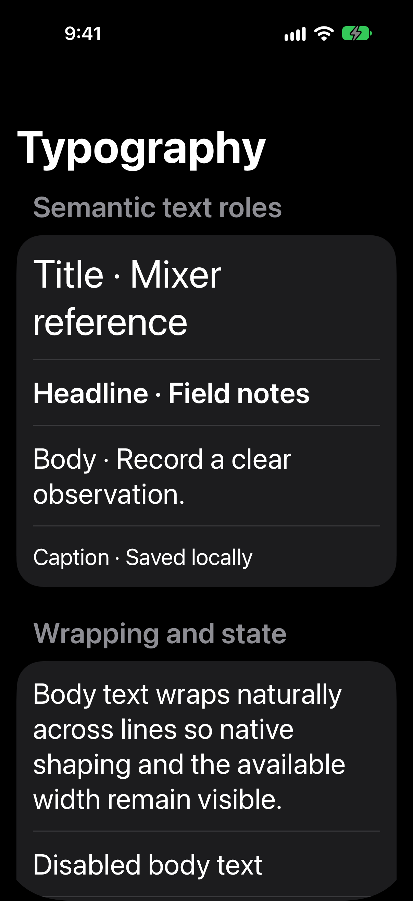
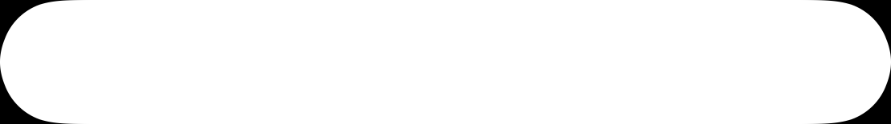
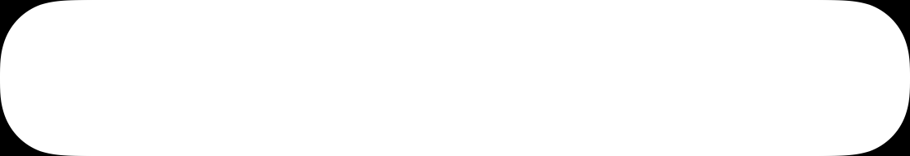

Apple native shape and row evidence
12 dedicated simulator captures, exact parent pixels and nodes. Authored path candidates are hypotheses. No physical parity or GA acceptance.
debug/typography-lightPublic geometry
 debug/typography-darkPublic geometry
debug/typography-darkPublic geometry
 debug/controls-lightPublic geometry
debug/controls-lightPublic geometry
 debug/controls-darkPublic geometry
debug/controls-darkPublic geometry
 debug/layouts-lightPublic geometry
debug/layouts-lightPublic geometry
 debug/layouts-darkPublic geometry
debug/layouts-darkPublic geometry
 debug/rtl-large-lightPublic geometry
debug/rtl-large-lightPublic geometry
 debug/rtl-large-darkPublic geometry
debug/rtl-large-darkPublic geometry
 debug/typography-accessibility-lightPublic geometry
debug/typography-accessibility-lightPublic geometry
 debug/typography-accessibility-darkPublic geometry
debug/typography-accessibility-darkPublic geometry

debug/controls-accessibility-lightPublic geometry
 debug/controls-accessibility-darkPublic geometry
debug/controls-accessibility-darkPublic geometry

Offscreen authored public path masks
White fill on black, 3×, generated through public SwiftUI Path → CGPath. These are not extracted native paths.
cell101-continuous-r26.png
cell52-continuous-r26.png

cell63third-continuous-r26.png

group-continuous-r26.png
thumb-continuous-r12.png
track-continuous-r14.png